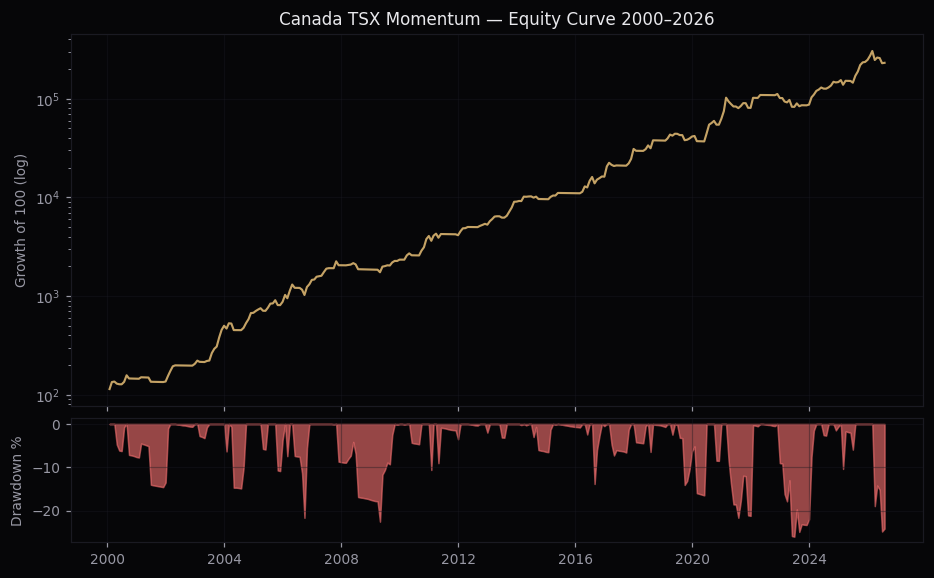
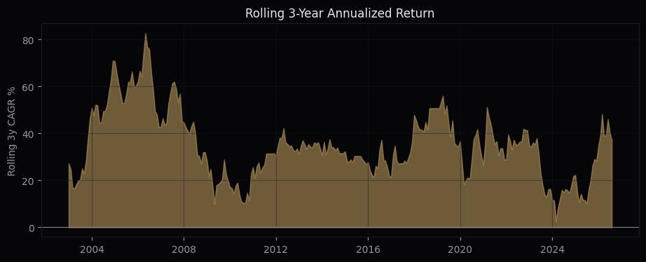

One-at-a-time sweeps across momentum lookback, market cap filter, regime window, portfolio size, fundamental filter and costs, plus calendar-year returns and rolling 3-year performance, behind the Canada TSX momentum strategy. 2000–2026, 319 months. All numbers from an independent harness mirroring the production engine's conventions (harness baseline 33.8%/1.19 vs engine 34.4%/1.22 — convention noise). Data caveat from the delisting forensics: recorded deaths in the TSX dataset are thin before 2017, so pre-2012 results carry survivorship risk; the audit's isolated 2017-2026 window (+33.9%/1.01) is the honest anchor.
LB 12M skip 0 · mcap top 80% (P20, computed on the full universe, independent of the fundamental filter) · NetIncome(TTM)>0 at +60d availability · N=10 equal weight · TSX vs MA75 · 40bps — CAGR +33.82%, Sharpe 1.19, Sortino 2.72, MaxDD -26.0%.

| Config | Sharpe | Sortino | CAGR | MaxDD |
|---|---|---|---|---|
| 12M skip 0 | 1.19 | 2.72 | +33.82% | -26.0% |
| 9M skip 1 | 1.096 | 2.62 | +32.29% | -26.7% |
| 12M skip 1 | 1.057 | 2.68 | +30.98% | -43.1% |
| 6M skip 0 | 0.989 | 2.32 | +29.99% | -34.3% |
| 9M skip 0 | 0.986 | 2.23 | +29.03% | -25.2% |
| 3M skip 1 | 0.898 | 2.16 | +29.51% | -48.4% |
| 6M skip 1 | 0.879 | 1.99 | +27.5% | -37.4% |
| 3M skip 0 | 0.804 | 1.88 | +25.91% | -38.7% |
12M/skip-0 tops a smooth plateau (9M/skip-1 at 1.10, 6M/skip-0 and 9M/skip-0 at 0.99). Short lookbacks and 12M/skip-1 degrade materially.
| Universe | Sharpe | Sortino | CAGR | MaxDD |
|---|---|---|---|---|
| none (all) | 1.339 | 3.1 | +39.04% | -28.2% |
| top 80% (P20) | 1.19 | 2.72 | +33.82% | -26.0% |
| top 50% (P50) | 0.96 | 2.03 | +26.12% | -41.8% |
| top 30% (P70) | 0.519 | 0.96 | +14.03% | -40.5% |
No mcap filter at all tests better (1.34) than the live P20 (1.19) — the raw edge concentrates in the very smallest names. P20 is kept deliberately: the smallest 20% of the TSX is where measured spreads blow out and position/ADV ratios become unexecutable. Large-cap-only (P70) destroys the strategy (0.52).
| Window | Sharpe | Sortino | CAGR | MaxDD |
|---|---|---|---|---|
| MA50 | 1.063 | 2.18 | +29.88% | -43.0% |
| MA75 | 1.19 | 2.72 | +33.82% | -26.0% |
| MA100 | 1.089 | 2.34 | +32.08% | -36.0% |
| MA150 | 1.079 | 2.31 | +31.7% | -29.5% |
| MA200 | 1.013 | 2.04 | +30.54% | -47.2% |
| MA75 ±2% band | 1.106 | 2.49 | +32.89% | -29.1% |
MA75 is the local optimum (unlike Germany's MA200) and MA200 here is the worst tested (−47% MaxDD). Note the honest negative result: the ±2% hysteresis band that looked promising on generic cross-market configs hurts the real Canada config (1.11 vs 1.19) — the idea stays parked.
| N | Sharpe | Sortino | CAGR | MaxDD |
|---|---|---|---|---|
| 5 | 1.009 | 2.31 | +34.96% | -36.6% |
| 7 | 1.081 | 2.46 | +34.98% | -37.1% |
| 10 | 1.19 | 2.72 | +33.82% | -26.0% |
| 15 | 1.284 | 2.98 | +31.17% | -23.0% |
| 20 | 1.26 | 2.82 | +28.1% | -22.4% |
| 30 | 1.337 | 3.04 | +26.73% | -18.8% |
Same pattern as Germany: Sharpe keeps rising with N (N=30: 1.34, MaxDD −18.8%) while CAGR falls. N=10 is the live choice for CAGR and practicality; N=15–20 is the natural lower-drawdown alternative.
| Filter | Sharpe | Sortino | CAGR | MaxDD |
|---|---|---|---|---|
| NetIncome(TTM)>0 (live) | 1.19 | 2.72 | +33.82% | -26.0% |
| EBIT(TTM)>0 | 1.176 | 2.81 | +33.4% | -27.4% |
| None | 0.768 | 1.73 | +27.89% | -35.0% |
The NetIncome(TTM)>0 filter is the single most important component after momentum itself: removing it costs 0.42 of Sharpe (1.19→0.77) and 6pp of CAGR, and deepens MaxDD by 9pp. EBIT>0 is statistically indistinguishable from NetIncome>0. Availability is the audited flat +60d convention (EODHD's TO filing_date is not a real publication date; using it naively adds ~+1.7pp of lookahead CAGR).
| Round-trip cost | Sharpe | Sortino | CAGR | MaxDD |
|---|---|---|---|---|
| 0bps RT | 1.267 | 2.94 | +35.82% | -25.1% |
| 40bps RT | 1.19 | 2.72 | +33.82% | -26.0% |
| 100bps RT | 1.077 | 2.41 | +30.87% | -27.2% |
| 200bps RT | 0.892 | 1.92 | +26.09% | -29.5% |
Robust to costs: even at 200bps RT the strategy keeps a 0.89 Sharpe. Real IBKR spreads measured across 555 TSX names: median 40.5bps — the 40bps assumption is a measurement, not a guess.
| Year | Strategy | TSX | Excess |
|---|---|---|---|
| 2000 | +45.4% | +6.2% | +39.2pp |
| 2001 | -6.3% | -13.9% | +7.6pp |
| 2002 | +51.1% | -14.0% | +65.1pp |
| 2003 | +143.0% | +24.3% | +118.7pp |
| 2004 | +35.3% | +12.5% | +22.8pp |
| 2005 | +29.2% | +21.9% | +7.3pp |
| 2006 | +66.8% | +14.5% | +52.3pp |
| 2007 | +40.7% | +7.2% | +33.5pp |
| 2008 | -9.5% | -35.0% | +25.5pp |
| 2009 | +26.0% | +30.7% | -4.7pp |
| 2010 | +73.6% | +14.4% | +59.2pp |
| 2011 | +1.9% | -11.1% | +13.0pp |
| 2012 | +27.9% | +4.0% | +23.9pp |
| 2013 | +71.2% | +9.6% | +61.6pp |
| 2014 | +5.8% | +7.4% | -1.6pp |
| 2015 | +14.9% | -11.1% | +26.0pp |
| 2016 | +47.2% | +17.5% | +29.7pp |
| 2017 | +91.0% | +6.0% | +85.0pp |
| 2018 | +21.7% | -11.6% | +33.3pp |
| 2019 | +9.9% | +19.1% | -9.2pp |
| 2020 | +51.4% | +2.2% | +49.2pp |
| 2021 | +28.8% | +21.7% | +7.1pp |
| 2022 | +25.9% | -8.7% | +34.6pp |
| 2023 | -14.2% | +8.1% | -22.3pp |
| 2024 | +69.2% | +18.0% | +51.2pp |
| 2025 | +68.0% | +28.2% | +39.8pp |
| 2026 | -6.7% | +11.1% | -17.8pp |

Mean rolling 3-year CAGR +34.8%, range +2.4% to +82.7%, negative in 0.0% of all 3-year windows.